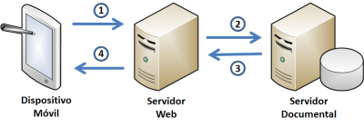
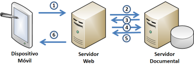
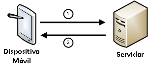

Firma electrónica en tres fases
Descripción
La firma electrónica en tres fases está pensada para entornos donde la clave privada reside en un sistema con al menos alguna de las siguientes restricciones:
-
El sistema no es compatible con el Cliente @firma. En este caso, dado que el 95% del código se ejecuta en un sistema externo, solo es necesario portar el 5% restante.
-
El sistema tiene unas capacidades muy limitadas en cuanto a proceso computacional, memoria o comunicaciones por red. En este caso, el sistema solo realiza una operación criptográfica, una firma PKCS#1, mucho menos demandante de potencia de proceso que una firma completa CAdES, y, adicionalmente, no trata el documento a firmar completo, sino únicamente una pequeña cantidad de datos resultante de un pre-proceso (la pre-firma) realizado por el sistema externo, lo que resulta en un enorme decremento en las necesidades de memoria y transmisión de datos (esto último si decide omitirse la transferencia del fichero a firmar).
-
Por motivos de seguridad, el documento a firmar no puede salir de un sistema externo. Como se ha descrito en el punto anterior, en este caso es posible omitir por completo la salida del documento del sistema externo, y puede transferirse únicamente el resultado de la pre-firma, desde la cual es imposible reconstruir el documento original.
Estos condicionantes convierten la firma trifásica en una opción perfectamente adaptada a los dispositivos móviles, donde se dan tanto la heterogeneidad de sistemas operativos (Apple iOS, Google Android, RIM BlackBerry, Microsoft Windows Phone, etc.) y las limitaciones en potencia de proceso, memoria y comunicaciones; en estas últimas hay que tener en cuenta el coste, especialmente si estamos haciendo uso de una red de otro operador en itinerancia (roaming).
En una firma trifásica, los datos que se transfieren entre servidor y cliente consisten en (previamente el cliente ha debido iniciar una petición de firma trifásica indicando referencia de documento y enviando la cadena de certificados del firmante):
-
Atributos firmados en el caso de CAdES.
-
Atributos firmados más identificador de fichero PDF y fecha de inicio del proceso (para reutilizarla en todas sus fases) en el caso de PAdES.
-
Nodo XML a firmar (que contiene las huellas digitales de las referencias a firmar) en el caso de XAdES.
El cliente devuelve al servidor en todos los casos la firma PKCS#1, acompañada en el caso de PAdES del identificador de fichero PDF y la fecha de inicio del proceso.
El funcionamiento típico de una firma trifásica en la que intervienen un dispositivo móvil, un servidor Web (que hace la pre-firma y la post-firma) y un servidor documental podría ser el siguiente:
Pre-firma:
<
-
El dispositivo móvil solicita una pre-firma al servidor Web indicando un identificador de documento.
-
El servidor Web solicita el documento a servidor documental.
-
El servidor documental entrega el documento al servidor Web.
- Es importante recalcar que el servidor documental no necesita almacenar ningún dato de sesión y que este no está expuesto a Internet de forma directa en ningún momento.
-
El servidor Web calcula la pre-firma, entregando el resultado (muy pequeño en tamaño) al dispositivo.
- Es importante recalcar que el servidor Web no necesita almacenar ningún dato de sesión ni exponer los documentos directamente al dispositivo.
Firma:
<
- El dispositivo móvil realiza, de forma completamente aislada una firma electrónica simple (computacionalmente ligera) de los datos de la pre-firma. La clave privada del usuario nunca sale del dispositivo y no se expone externamente en ningún momento.
Post-firma:
<
-
El dispositivo móvil solicita una post-firma al servidor Web indicando un identificador de documento y proporcionando el resultado de su pre-firma firmada.
-
El servidor Web solicita el documento a servidor documental.
-
El servidor documental entrega el documento al servidor Web.
-
El servidor Web calcula la post-firma y compone el documento final firmado, entregando el resultado al servidor documental para su almacén.
-
El servidor documental almacena el nuevo documento y devuelve un identificador al servidor Web.
-
El servidor Web comunica al dispositivo el éxito de la operación y el identificador del fichero ya firmado y almacenado.
El esquema podría ser igualmente implementado sin servidor documental, pudiendo obtener el Servidor Web el documento desde otro origen, incluyendo el propio dispositivo móvil. Igualmente, una vez firmado el documento, su destino puede ser cualquiera, incluyendo de nuevo al propio dispositivo.
Es conveniente tener en cuenta al usar firmas trifásicas que es necesario disponer de un mecanismo para que el usuario pueda ver en todo momento los documentos que está firmando (una copia que refleje con fidelidad el contenido firmado puede ser suficiente) para evitar situaciones de repudio.
Una ventaja adicional en las firmas trifásicas es que, puesto que la última fase la realiza el servidor y cuenta ya con el documento
Implementación
La implementación de la firma trifásica es posible en cualquier caso, pero siempre teniendo en cuenta las siguientes consideraciones:
CAdES
La implementación de firma trifásica CAdES no presenta complicaciones extraordinarias:
-
Dificultad: Baja
-
No es necesaria la modificación de ningún API externo a @firma.
PAdES
La implementación de firma trifásica PAdES presenta las siguientes peculiaridades:
-
Dificultad: Media-Alta
-
Es necesario modificar el API iText.
- Realmente, la modificación de iText no supone una traba en la evolución de @firma, ya que este usa una versión antigua concreta (2.1.7) por temas de licenciado.
La dificultad de la implementación de las firmas trifásicas PAdES radica en la adición de elementos aleatorios (por ejemplo, el identificador de fichero) y fechas de creación de secciones dentro de los documentos PDF que son necesario sincronizar entre cliente y servidor para asegurar que las huellas digitales no difieren.
XAdES
La implementación de firma trifásica XAdES presenta ciertas dificultades dado el encapsulamiento del API XMLDSig de Java, siendo necesario implementar el concepto de Facets de firma XML.
-
Dificultad: Alta
-
Es necesario modificar el API JXAdES.
- Realmente, la modificación de iText no supone una traba en la evolución de @firma, ya que estas modificaciones se realizarían conjuntamente con el equipo de JXAdES atendiendo específicamente a las necesidades de @firma, y las modificaciones se incorporarían de forma definitiva a JXAdES.
Firma electrónica en dos fases
La firma electrónica en dos fases comparte algunos escenarios de uso preferente con la firma en tres fases, pero presenta diferencias significativas:
-
El 90% del código se ejecuta en servidor, lo que facilita migrar el 10% restante a plataforma actualmente no soportadas por el Cliente @firma.
-
El documento inicia el proceso desde el dispositivo y lo finaliza también en el dispositivo, por lo que es adecuado para procesos donde no interviene un servidor de documentos.
-
Se reducen las conexiones de red respecto a la firma trifásica (solo se necesita una conexión), pero el tráfico de estas aumenta, lo cual simplifica la operación cuando el servidor Web requiere autenticación.
-
Se mantiene, tal y como ocurre en la firma trifásica, una demanda baja en cuanto a potencia computacional en el dispositivo, pero no así la demanda de memoria. Este traslado de necesidades de memoria del servidor al dispositivo permite a este primero tratar un altísimo volumen de peticiones con un hardware de gama media.
En una firma bifásica, los datos que se transfieren entre cliente y servidor constan de:
-
Documento a firmar.
-
Cadena de certificados del firmante.
Y la respuesta del servidor al cliente:
- Documento pre-firmado.
-
Datos a firmar mediante PKCS#1.
-
Información necesaria para insertar esta firma PKCS#1 en el documento pre-firmado.
- Desplazamiento (offset) dentro del binario donde debe colocarse la firma PKCS#1, cadena de texto a sustituir por la firma PKCS#1 (en Base64 o en su representación ASCII del hexadecimal, etc.).
El funcionamiento típico de una firma bifásica en la que intervienen un dispositivo móvil y un servidor Web (que hace la pre-firma) podría ser el siguiente:
Pre-firma
<
-
El dispositivo móvil solicita una pre-firma al servidor Web enviando la cadena de certificados del firmante (puede enviar igualmente el documento o el servidor Web puede obtenerlo de una fuente externa, como un servidor de documentos).
-
El servidor Web devuelve la pre-firma al dispositivo (que contiene el documento preparado para la firma final y los datos binarios a firmar mediante PKCS#1) y da por finalizado el proceso en su extremo.
Firma
<
- El dispositivo móvil realiza, de forma completamente aislada una firma electrónica simple (computacionalmente ligera) PKCS#1 de los datos de la pre-firma y realiza él mismo el proceso de inserción en el documento pre-firmado. Este proceso es relativamente ligero en cuanto a potencia computacional, pero puede requerir mucha memoria en el dispositivo.
Recomendaciones de incorporación de tecnologías multi-fase dentro del proyecto @firma
Comunicaciones entre cliente y servidor y desarrollos en la parte servidora
Para la comunicación entre cliente y servidor se propone el uso de tecnologías REST (Transferencia de Estado Representacional). REST presenta numerosas ventajas respecto a otros sistemas en el ámbito de las firmas multi-fase:
-
Es un protocolo sin estado.
- Combinado con una implementación en la que no es necesario almacenar ningún dato de sesión en el servidor incrementa la seguridad del sistema, ya que en caso de compromiso de este no hay documentos del usuario almacenados susceptibles de apropiación indebida.
-
Es un protocolo simple.
- La ausencia de SOAP y las limitaciones en el uso de XML lo hacen apto para dispositivos con capacidades limitadas, a la vez que facilitan una implementación rápida y fácil de mantener en el lado cliente.
Se propone una implementación utilizando exclusivamente tecnologías presentes en JEE6 (sin usar API de productos externos), lo cual permite una completa independencia tecnológica en cuanto a servidores de aplicaciones y blinda en cierto modo la futura obsolescencia.
El plantea un servicio por completo independiente del resto de servicios de servidor de la plataforma @firma (que están ligados a versiones obsoletas de Axis, no aptas para implementar modernos servicios basados en REST). No obstante, la aplicación servidora, en forma de EAR o WAR, podrá desplegarse en el mismo servidor de aplicaciones que la plataforma @firma, siempre que este sea compatible JEE6.
Para facilitar las labores de pruebas e implantaciones de referencia se plantea proporcionar adicionalmente un servidor GassFish Embedded configurado para el arranque automático del servicio.
Uso del Cliente @firma en un entorno servidor
El servicio servidor hará uso del Cliente @firma a modo de bibliotecas, beneficiándose de los trabajos de organización en módulos ya iniciada. Este uso como bibliotecas requerirá un trabajo adicional para adaptarse a los entornos servidores IBM en los que se usen máquinas virtuales específicas de este fabricante (por ejemplo, servidores de aplicaciones WebSphere sobre hardware IBM iSeries, tanto bajo Windows como con Linux, AIX, OS/400, Z/OS, etc.).
Desarrollos en la parte cliente
Para la implantación en la parte cliente se propone inicialmente el desarrollo de una serie de bibliotecas que implementen todas las funcionalidades necesarias para las firmas en varias fases, separando en distinta biblioteca las firmas trifásicas y las bifásicas.
Se plantea el desarrollo de estas bibliotecas para diferentes entornos operativos:
-
Java, compatible con entornos JSE5 y JSE6 (Applets y aplicaciones Java genéricas) y Google Android 2 y superiores.
- Es posible su adaptación para compatibilidad con entornos RIM PlayBook.
-
Objective C, compatible con entornos Apple iOS (iPhone, iPad, iPod, etc.).
-
.NET C#, compatible con entornos Windows Phone 7 y superiores (incluido Widows Phone 7.5 “Mango”) y adaptable a controles ActiveX para Windows.
- Es posible igualmente su adaptación a otras plataformas compatibles, como Microsoft Xbox o Linux-Mono.
-
JME (Java Micro Edition), compatible con RIM BlackBerry.
- Es posible su adaptación a otras plataformas JME, como MHP (TDT, BluRay), Symbian, MIDP, etc.
Sobre cada una de las plataformas se realizara una “aplicación de referencia” que demuestre la corrección funcional de las bibliotecas y sirva como guía de uso e implementación.
En el caso de Java, se propone además la implementación de un Applet JSE6 (realmente dos Apleta stinta biblioteca las firm(al estilo del actual "an, MIDP, etc.)..).ativos:es, separando en distinta biblioteca las firmpplets, uno para firmas trifásicas y otro para bifásicas) que replique las funcionalidades básicas del Applet Cliente @firma (al estilo del actual “MiniApplet”), pero usando firmas en varias fases.
Integración de los nuevos trabajos en la Forja de @firma
Los nuevos trabajos se integrarían de forma completa en la forja del proyecto Cliente @firma, lo cual comporta las siguientes implicaciones:
-
El código fuente debe publicarse con una licencia compatible con las actuales del proyecto.
-
El código fuente debe cumplir con las normativas en cuanto a estándares, calidad, estilo y procedimientos definidos en el proyecto.
- Incluyendo la necesidad de separación modular en componentes independientes (con el mínimo acoplamiento posible) de las nuevas funcionalidades.
-
La comunidad del proyecto (con el apoyo del Ministerio de Política Territorial y Administración Pública) asumiría una serie de tareas de mantenimiento, evolución y pruebas del nuevo código:
-
Control de calidad, tareas para el mantenimiento y la mejora de la calidad.
-
Pruebas unitarias y su incorporación al servicio de integración continua, incluyendo el mantenimiento de los casos de prueba.
-
Mantenimiento correctivo del código, incluyendo adecuaciones a nuevos entornos soportados por el proyecto e incorporación de nuevas tecnologías.
- Por ejemplo, soporte de nuevos sistemas operativos, nuevos entornos de ejecución de Java, etc.
-
Incorporación a los sistemas de automatización y mantenimiento de estos.
-
Adicionalmente, la entrada en la comunidad también conlleva una serie de obligaciones:
-
El mantenimiento evolutivo del código en cuanto a correcciones y evoluciones ligadas exclusivamente a requisitos de negocio debe correr por el aportante, en este caso la Junta de Andalucía.
-
Las pruebas funcionales que determinen la aceptación en cuanto a requisitos funcionales deben ser realizadas por el aportante (la Junta de Andalucía).
-
Las correcciones técnicas de componentes software que afecten únicamente a requisitos funcionales o de negocio exclusivos del aportante deberán ser igualmente realizadas por este (la Junta de Andalucía).
No obstante, si para la inclusión de las nuevas funcionalidades propuestas se ampliasen o modificasen componentes que afecten a funcionalidades o requisitos de negocio ya existente, el mantenimiento será compartido por los integrantes de la forja existentes, con el apoyo del Ministerio de Política Territorial y Administración Pública.